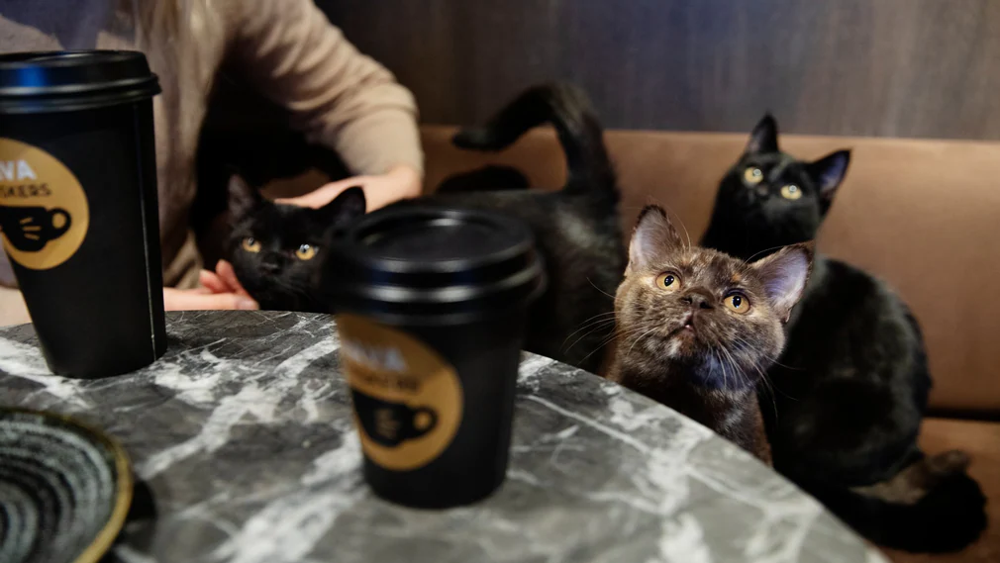

Beställning av "latte och en kattunge" resulterade i oväntad leverans
Publicerad På Kaféet Solstrålen i Göteborg blev en vanlig morgon lite mer komplicerad när en besökare skämtsamt skojade till sin beställning och bad om "en latte och en kattunge, tack".
Baristan, som trodde att det var ett skämt, skickade ut en latte med ett kort och en leksakskattunge. Men besökaren som ville se hur långt det gick att ta skämtet frågade om det var möjligt att få en verklig kattunge istället för en leksak.
En av kaféets anställda, som visade sig vara en volontär på ett lokalt katthem, erbjöd sig att ringa till katthemmet för att se om det fanns någon adopterbar kattunge som passade besökarens önskemål.
"Vi ville verkligen göra det rätt och förvandla detta till något positivt," förklarade kaféets ägare. "Så vi kontaktade lokala katthemmet för att se om de hade en adopterbar kattunge till hands."
Som ett resultat av detta missförstånd fick besökaren inte bara en varm dryck utan även möjligheten att anta en riktig kattunge från katthemmet som en del av kaféets sätt att göra upp för det humoristiska men missförstådda önskemålet.
Kaféet, som också donerar en del av sina intäkter till katthemmet som en gest av goodwill, har fått positiv uppmärksamhet för deras ansvarstagande och positiva inställning gentemot situationen.